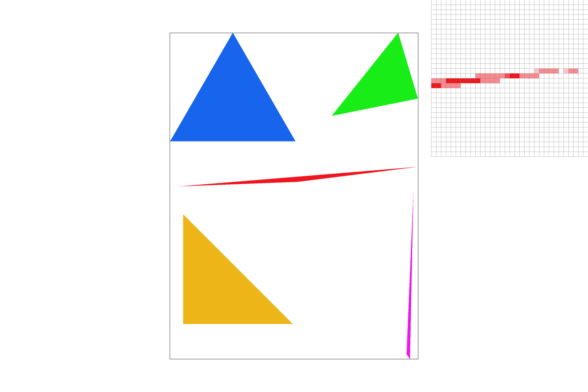
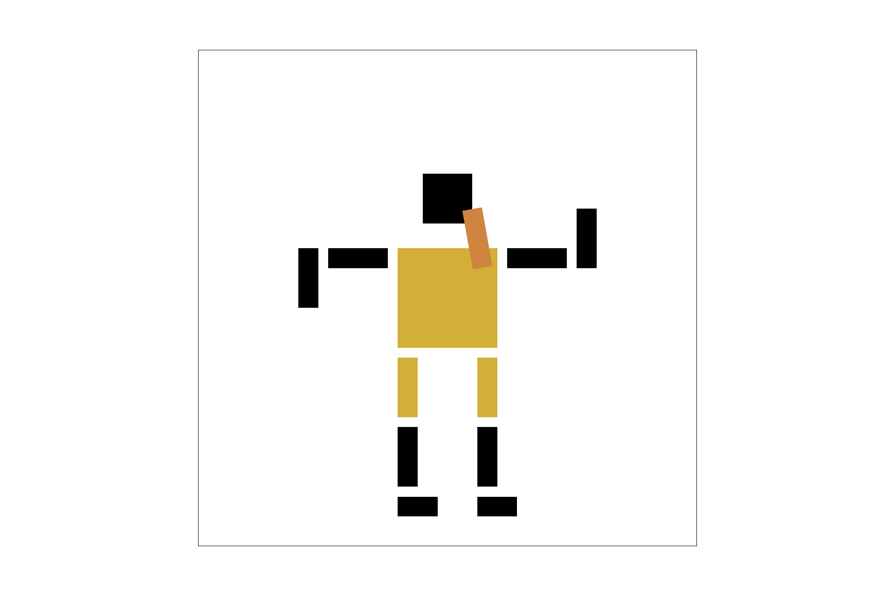
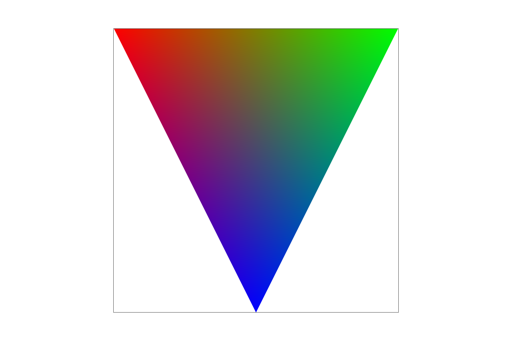
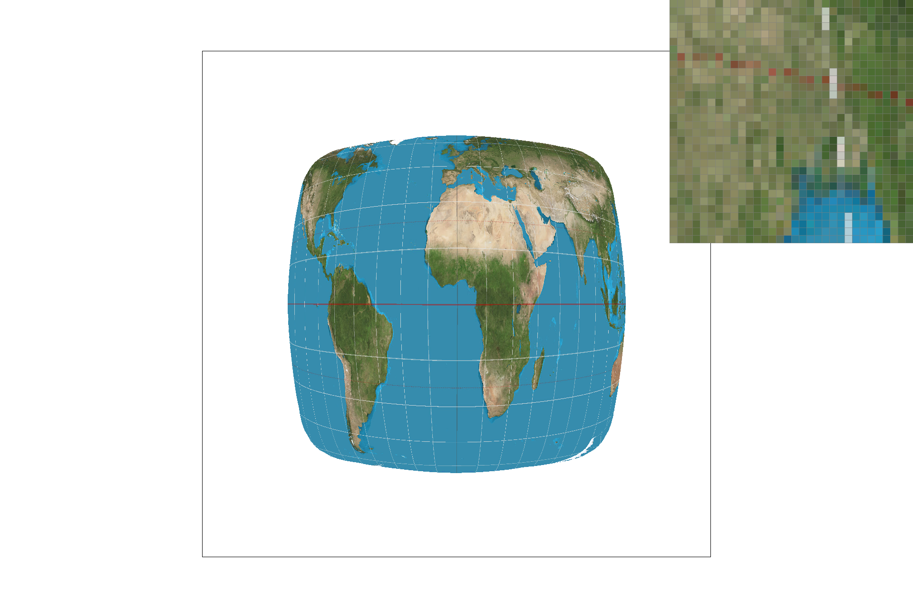
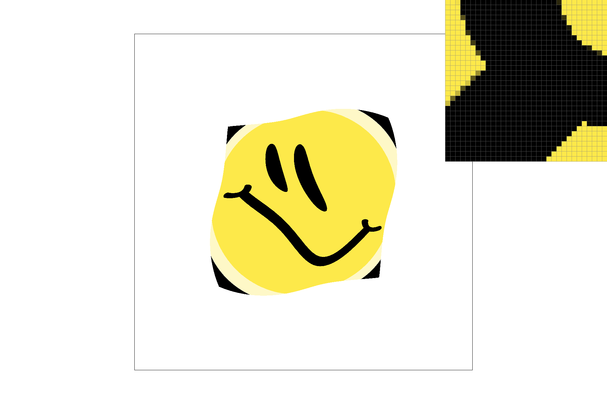
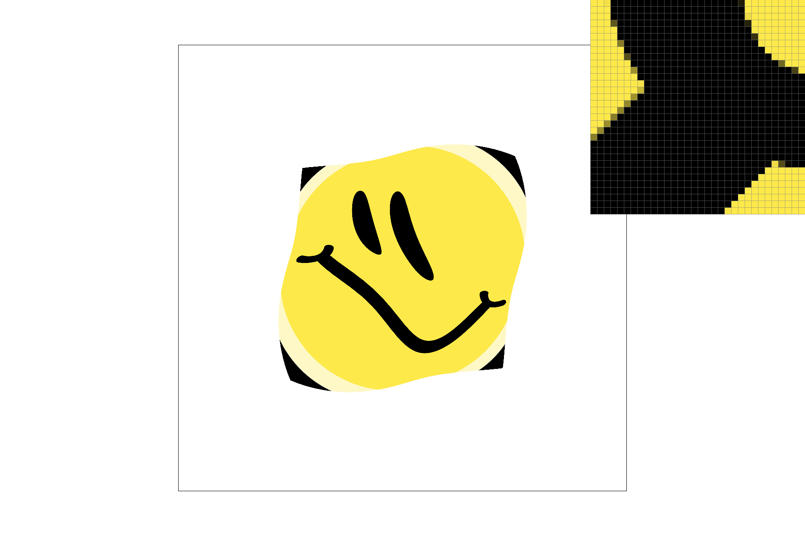
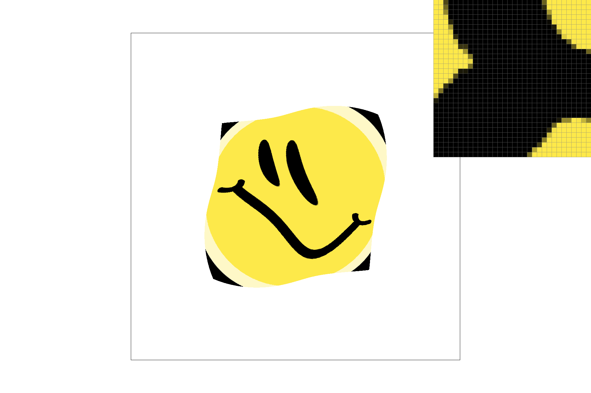

CS 184: Computer Graphics and Imaging, Spring 2019
Project 1: Rasterizer
Z Wang
Overview
What are the challenges of displaying an image on a screen? Much of computer graphics we take for granted—how exactly are 3-dimensional spaces mapped (convincingly and quickly) onto a 2-d plane? How can we deal with different resolutions of images, and more interestingly, how does our approach change when dealing with graphics and viewpoints that move?
This project begins with the fundamental problems of coloring pixels in a frame buffer and rendering triangles. We then explore supersampling as an anti-aliasing method, as well as transformations on shapes as a tool for creating complex graphics efficiently. Lastly, we'll see how barycentric coordinates can be used to map colors and textures onto on-screen shapes, leveraging techniques like bilinear sampling and mipmaps.
Section I: Rasterization
Part 1: Rasterizing single-color triangles
The basic approach to rasterizing a triangle is by testing if each pixel lies within the triangle. This introduces some interesting subproblems:
- If a pixel has nonzero area, then which part of it's area do we use as a representative of the entire pixel?
- Given a coordinate and the vertices of a triangle, how can we tell if the coordinate lies within the triangle?
To deal with the first problem, we'll first go with the naive approach of using the center of each pixel as its sole representative.
Some Geometry
Dealing with the second problem requires some basic coordinate geometry; here, the internet offers a variety of solutions:
- Testing if the point lies inside the half-plane of each of the triangle's edges—this is the method we will use.
- Given triangle vertices ABC and coordinate X, test if area(ABC) = area(ABX) + area(XBC) + area(AXC). There are off-the-shelf formulas for calculating area.
- Use barycentric coordinates—this'll be explained further in Part 4.
- "Find the vectors connecting the point to each of the triangle's three vertices and sum the angles between those vectors. If the sum of the angles is 2*pi then the point is inside the triangle." (source)
Going with the first approach means first finding the vectors that represent the edges of the triangle. From each edge vector we can get it's normal vector (oriented toward inside the triangle—a key distinction). Then we can compute the cross-product of each normal vector with the vector from a point on the edge to the given coordinate. If this cross-product is positive, then the coordinate lies on the correct side of the edge (within 90 degrees of the normal). If it's negative, it's on the wrong side; and if it's zero, then it lies exactly 90 degrees from the normal.
However, this approach isn't agnostic to the order in which the triangle's vertices is passed in. If the vertices are given in clockwise order, then the normals we want are on the right side of the edge. If counterclockwise, then they're on the left. To account for this, we'll ensure vertices are in counterclockwise order. If they aren't (which can be determined using
another formula), then we'll swap the second and third vertices to get counterclockwise order.
Algorithm
Alright, so now we can tell if a point is within a triangle. Given a triangle and color, then, we can apply this test to the center of each pixel around the triangle—if the pixel center lies within the triangle, we'll color that pixel. But what does "around the triangle" mean? We wouldn't want to test every pixel on the screen, so instead let's find the bounding box of the given triangle by finding the min and max values of its vertices x and y coordinates. Running a loop like so:
for (x = min_x; x < max_x; x++) {
for (y = min_y; y < max_y; y++) {
/* Color pixel (x, y) if (x+0.5, y+0.5) lies inside the triangle. */
}
}
will only explore pixels within the triangle's bounding box.
Results
Here are some results we get:
|
1a. Lots of triangles--looks pretty good.
|
1b. Hm. Maybe not...
|
Part 2: Antialiasing triangles
The magnified shot in image 1b reveals a key weakness in our naive approach. If we only look at the center of each pixel, then our image can be significantly affected by "jaggies", or a lack of smoothness in shapes whose position change rapidly relative to our sampling rate, which in the naive case is simply 1 sample/pixel. In the 1b example, a very thin triangle can cross the centers of pixels somewhat arbitrarily—even if the triangle covers just under half of the pixel's area, it may not be colored if the center lies outside. This results in the stacatto, stairstep-like scattering of red lines.
One way around this problem is taking more samples in each pixel: supersampling. Here, we first define the number of samples taken per pixel—let's call this the sample-rate. Furthermore, let's distribute these samples evenly across the pixel (this is the most intuitive distribution, although perhaps giving more weight to samples closer to the center would produce better results).
Algorithm
Now we need to change our algorithm: for each pixel, we'll run through another pair of x, y coordinate loops which traverse sample-rate points. If a point is within the triangle, we won't color the entire pixel, but color that subpixel. After running through the whole pixel, we can determine its color by averaging over all its subpixel colors (where the default is transparent). While this is all pretty straightforward, it's worth noting that type conversions and rounding in C++ gave me a fair bit of struggle.
Results
Here's the same thin triangle edge over increasing sample-rate's:
|
2a. The OG, 1 sample/pixel.
|

2b. 4 samples/pixel.
|
 2c. 9 samples/pixel.
2c. 9 samples/pixel.
|
2d. 16 samples/pixel.
|
So why does this work? Let's consider a pixel whose top 40% area overlaps with the triangle. In our naive scheme, this pixel would have no color. Now, if we're using a sample rate of 9 and 4/9 of them lie within the triangle, then this pixel will be colored with 4/9'ths saturation. Viewed from afar, we get the impression that the pixel is half-colored, giving a much smoother look.
Part 3: Transforms
Transforms are useful because a shape which is used in many different places, but is oriented or stretched in different ways, can be represented just once, and the others created via transforms on the original. We implemented three of the most fundamental: translations, scaling, and rotations. Using homogenous coordinates (where an additional dimension is added to incorporate translations), we created matrices for each transform. Input vectors (representing either points or directions) are multiplied with a matrix to transform it.
While we won't write out each matrix, they can be easily found online.
Results
Here's a simple graphic of a red cubeman formed using transforms, as well as a version I edited, with the goal of creating a crudely-rendered ancient Egyptian painting (sorry, Egypt). To do so, I added a slim, slightly-rotated rectangle for a beard as well as flattened rectangles for feet, while changing the colors to resemble cubeman donning a long shirt.
 3a. Beep boop.
3a. Beep boop.
|

3b. Pharoah Beep boop.
|
Section II: Sampling
Part 4: Barycentric coordinates
So far, our graphics have been greatly limited by having only monochrome triangles. To make a primitive shader, we can assign different colors to each vertex—this would allow for gradients within the triangle, where each point's color is determined by its position vis-a-vis the vertices.
Some More Geometry
To determine a coordinates position relative to a triangle's vertices, we'll use barycentric coordinates. If we have a triangle ABC and coordinate X, then the barycentric coordinate of X corresponding to vertex A will be the distance between X and the edge BC along the normal of BC which intersects A. In this way, X can be represented by its barycentric coordinates for A, B, and C. Interestingly enough, the three barycentric values will always sum to 1.
Results
The first image below shows our basic triangle with Red, Green, and Blue-valued vertices. With barycentric coordinates, each point inside the triangle is shaded with a weighted blend of the three colors, depending on its distance to each vertex. The second image is a color wheel created using many triangles. Note that in this color wheel, the center point appears greyish-black as it is an even blend of all the primary colors.
|

4a. Color triangle.
|
 4b. Color wheel.
4b. Color wheel.
|
Part 5: "Pixel sampling" for texture mapping
What if we wanted to map not colors but textures onto our triangles? We can still leverage barycentric coordiantes—however now, they will be used to calculate (u, v) coordinates in a texture space, where each vertex has its own (u, v) coordinate instead of a color.
But if we are given a texture, that means it has a certain resolution. If the resolution is the same as that of our screen, then each pixel can be nicely matched with a texel (texture pixel). What then happens if we zoom in or out? If we zoom in, then each texel will encompass several pixels. If we zoom out, each pixel will encompass several texels.
Pixel Sampling Methods
To resolve these imbalances, we'll introduce two methods of pixel sampling.
The first and simplest is nearest-pixel sampling: here, we just find the texel closest to a given sample (by rounding the sample's (u, v) coordinates).
The second is bilinear sampling. Here, we consider the 4 texels closest to a given sample (by getting the floor and ceiling of its (u, v) coordinates), then performing linear interpolation across the colors of those four texels to get the sample color. Linear interpolation between two texels means a linear combination of their colors, where each is weighted by its distance to the given sample point (proportional to the total distance between the two texels).
|

5a. Nearest-pixel, sample-rate of 1.
|
 5b. Bilinear, sample-rate of 1.
5b. Bilinear, sample-rate of 1.
|
|
5c. Nearest-pixel, sample-rate of 16.
|
5d. Bilinear, sample-rate of 16.
|
From these images, we can see that bilinear sampling does far better than nearest-pixel under low sample-rates and magnification, and particularly better if the texture has sharp changes in color (like the lat-long markings on the map). This makes sense, because if there are many samples/texel, then nearest-pixel sampling will just make each sample snap to the closest texel color, whereas bilinear sampling will smooth out differences between adjacent texels (in a manner not dissimilar to supersampling).
We can also see that using a sample-rate of 16 greatly mutes the differences between the two sampling methods. Nonetheless, there are still noticably-sharper edges in 5c, which results in a more pixelated look.
Part 6: "Level sampling" with mipmaps for texture mapping
Although pixel sampling does a good job of mapping textures onto the screen, it's not very flexible with image resolutions that are different from the texture resolution. In particular, textured objects that appear far in the distance will have much lower resolution on screen. In other words, there can be many, many texels per pixel. If we followed the previous pixel sampling methods, then we'd miss out on a bunch of the texels: this is bad. The goal of level sampling, then, is to make sampling textures at a much lower resolution than the texture itself more efficient.
The original, full-resolution mipmap is stored first, in what's called level 0. Progressive mipmap levels store compressed versions of the texture, where a texel at level n represents 2 texels at level (n-1).
In this way, if we know a pixel of a minified texture will cover the space of 8 texels in the original texture, we can simply use the mipmap at level 3, instead of trying to interpolate across 8 full-resolution texels for each pixel.
Barycentric Coordinates Revisited
But how do we know how large a pixel is relative to the original texture (especially when the shapes on screen may represent warped versions of the texture, like in perspective)?
For this project, we'll use an approximation. For each sample (x, y), we'll also compute the barycentric coordinates of the points (x+a, y) and (y+a, x), where a represents the distance between each supersample (a = 1/sample-rate). This gives us a pseudo-gradient at the sample's location, which can then be translated into the texture's (u, v) space to give an estimate of how many texels in the x and y direction that this pixel will represent.
Once we know the number of texels that a pixel represents, finding the mipmap level is just taking the log base 2 of that number.
Level Sampling Methods
However, taking a log will rarely produce an integer. When it doesn't, how do we know which mipmap to index into?
Similar to with Pixel Sampling, one solution is finding the nearest level. This means rounding the result of the log (truncating if the result rounds out of bounds).
While nearest-level is simple, it fails when an image on screen contains a texture at different mipmap levels (which is often the case: a brick wall receding into the distance could go through several mipmaps). If we use nearest-level here, there will be sharp edges marking the transition between mipmaps of different resolutions.
To deal with this, we can use linear level sampling, which interpolates linearly between the two closest mipmap levels. This is the same interpolation we did with bilinear pixel sampling, and produces smooth transitions between mipmaps.
Results
Here's an image of a smiley face texture rendered using combinations of nearest-pixel and bilinear pixel sampling with level 0 (full-resolution) and nearest-level sampling:
|

6a. Nearest-pixel, Level 0.
|

6b. Nearest-pixel, Nearest-level.
|
|

6c. Bilinear, Level 0.
|
6d. Bilinear, Nearest-Level.
|
Comparison Between Methods
We have now at our hands choices in supersampling, pixel sampling, and level sampling. While each can help make our image look smooth, what are their costs?
Supersampling takes the most time, as we are increasing the number of samples we take by a factor of sample-rate. If we also use different pixel/level sampling methods, the cost of those methods would grow by the same factor, as we perform the pixel/level sampling procedure for each sample. Our memory usage would also grow, as each pixel would have to keep track of sample-rate subpixel colors (with the additional computation of averaging over those colors).
Pixel sampling comes with the added cost of computing barycentric coordinates and converting them to the (u, v) system (all constant so far given constant time arithmetic). However, using bilinear sampling would require checking 4 texels / sample, which although constitues an extra factor of 4, does not change our big-O time complexity as it is a constant. Pixel sampling also doesn't increase space complexity.
If we're rendering a zoomed-in image or using a very high sample-rate compared to the texture resolution, then multiples samples would be computed using every 4 texels. In this case, our rendered texture would look much better with bilinear sampling, and caching may be a useful tool.
If we are rendering a zoomed-out image of a texture (where there are many texels/sample), we likely wouldn't consider all the available texels (unless they are neighbors of a sample). This helps cut down time but reduces image quality, since ignored texels may be vital to the texture content.
What about level sampling? First off, the mipmap array takes both computation to build out and space to hold. While the extra space needed is just linear w.r.t. the original texture size, the time needed to compute compressed versions is the original texture size * the number of levels. While we also require dx and dy estimations, these add just a constant factor of 3 to our existing time complexity.
But while more levels means more precomputation, they help make rendering zoomed-out textures much faster. In a sense, the levels can be seen as caching lower-resolution versions of the texture, instead of computing them on-the-fly. This way, if we have multiple texels/sample, we can simply look at a higher-level mipmap—this will leave the issue of compressing the texture to the mipmap generation process rather than the pixel sampling method, so the overall quality will be much higher. However it's worth noting that pixel and level sampling are still somewhat independent: bilinear sampling will still look at the closest 4 texels in whichever mipmap we use. However, if our mipmap resolution is close to the sampling resolution, we may be able to use nearest-pixel sampling instead and avoid the cost of bilinear interpolation.
Further, mipmaps are less effective when we're zooming in, or when the sampling resolution is much higher than that of the texture. In this case, we'd be limited by the level-0 mipmap resolution, and most samples would be using level-0 sampling. This is evident in the relative ineffectiveness of 6b compared to 6c.